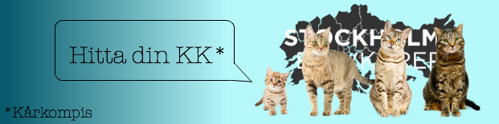

Årsmöte16
Posted on February 17, 2016
Tack för ett givande årsmöte!
Den avgående styrelsen tackar och bockar för ett fantastiskt verksamhetsår – de initiativ som tagits av Stockholmskårerna har varit av stor vikt för en framgångsrik elevrörelse.
Den nya styrelsen ser ut som följande
Amalia Berglöf – ordförande
Ludvig Lundgren – vice ordförande
Wilma Westerberg – ledamot
Smilla Ubbe – ledamot
Filip Hong – ledamot
Adrian Salamon – ledamot
Temisan Hambraeus – revisor tillika sammankallande för valberedningen
Årsmötesprotokollet återfinns under fliken “Protokoll”.
Stockholms Elevkårer presenterar Kårkompis
Posted on February 17, 2016

Hur lyckas den där kåren med sin marknadsföring? Varför har de 10+ likes på varenda status de lägger upp? Eller hur lyckas de nå ut till alla skolans elever, och får alla att känna sig hemma och en del av kåren? Hur lyckades de bli majoritetskår? Hur projektplanerar de? Har de NÅGONSIN misslyckats med ett evenemang? Varför har de just ett sådant utskott?
Elevkårsstockholm växer, och med det också frågorna. Mötesplatserna och möjligheterna att få nya perspektiv och tankar kring sin egen verksamhet är få, och det är något vi vill ändra på. Därför lanserar vi Kårkompis.
Kårkompis är en möjlighet för er att kunna lära av och med varandra. De anmälda elevkårerna paras ihop två och två och får med hjälp av en handledare och mentor chansen att bolla idéer, eller samarbeta gällande enskilda eller gemensamma event. Kanske har ni börjat planera en vinterbal, en demonstration eller en debatt? Har ni ingen aning om vad ni ska göra till våren? Det här är ett perfekt tillfälle att kunna få feedback och hjälp med era idéer! Med hjälp av Kårkompis hoppas vi att fler elevkårsaktiva känner att de får ut något av sin tid som engagerade – både i form av kontakter, men också gemenskap, erfarenheter och nya perspektiv på skolan och elevkårsarbetet. Alla medlemsorganisationer i Stockholms Elevkårer kan delta – detta är inget som riktar sig endast till väletablerade elevkårer, utan är till för alla, hur nybildad eller rutinerad organisationen än är.
Anmälan till Kårkompis sker via Google Drive – här, och ska ske senast 14e augusti (14/8) klockan 12.00. Den 26e augusti släpps Kårkompis-paren på ett gemensamt mingel där vi “mjukstartar” genom att gå till botten med en av de stora och jobbiga frågorna: Varför engagerar vi inte fler?
Har ni några frågor? Funderingar? Tveka inte på att skicka iväg ett meddelande till någon av oss i styrelsen!
Projektansvarig – Amalia Berglöf, ledamot (amalia.berglof@stockholmselevkarer.se, 0703453004)
Amanda Karlberg, ordförande (amanda.karlberg@stockholmselevkarer.se, 0704415655)
Sam Fakhraie, vice ordförande (sam.fakhraie@stockholmselevkarer.se, 0707909206)
Lihini Wijesinghe, ledamot (lihini.wijesinghe@stockholmselevkarer.se, 0735510492)
Wilmer Wallin, ledamot (wilmer.wallin@stockholmselevkarer.se, 0707905304)